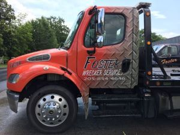
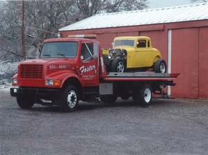
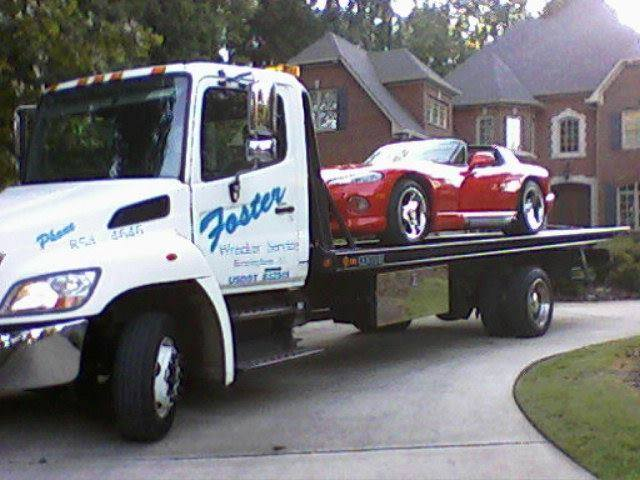

(205) 854-4646
When you need a car towed, we have professional employees and equipment to handle several varieties of vehicles.
We serve Birmingham and the surrounding metro area, with over 40 years of experience.
Call us today!
We are available 24/7 for roadside assistance and light or medium
duty towing. Foster Wrecker Service provides towing, roadside
assistance, and wrecker services for Birmingham, Trussville, Center
Point, and surrounding areas. Foster Wrecker Service operates towing services local and long distance. See our
services page for a complete list of all we can do for you!

"We're always on our tows!"
  